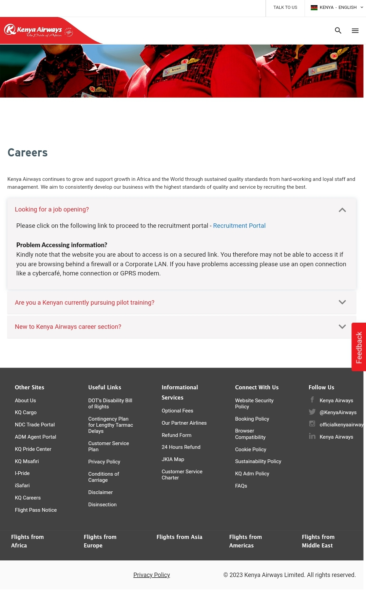
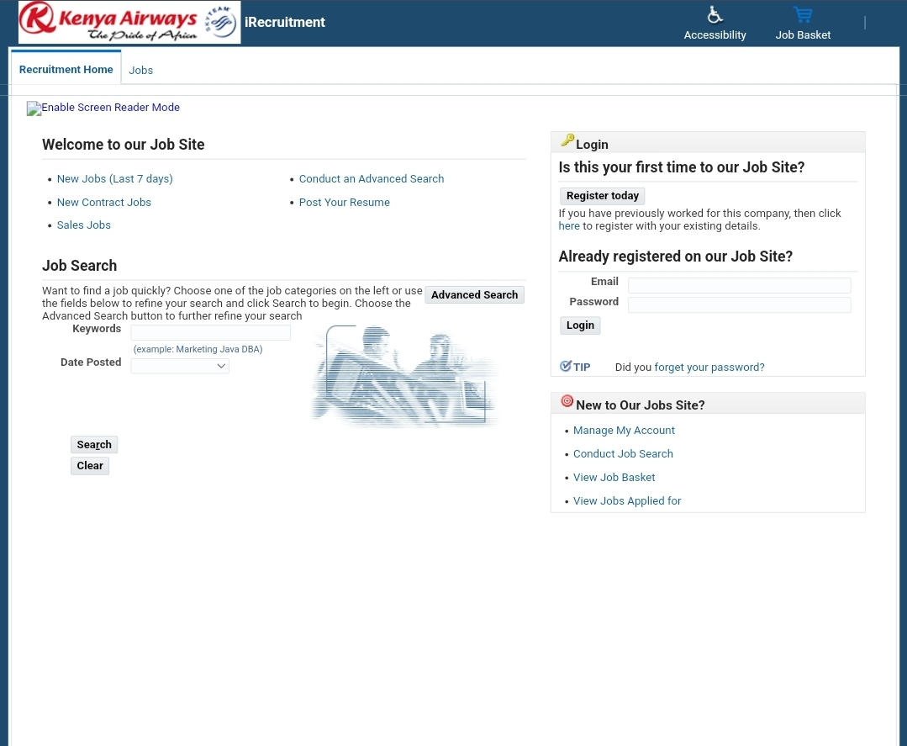
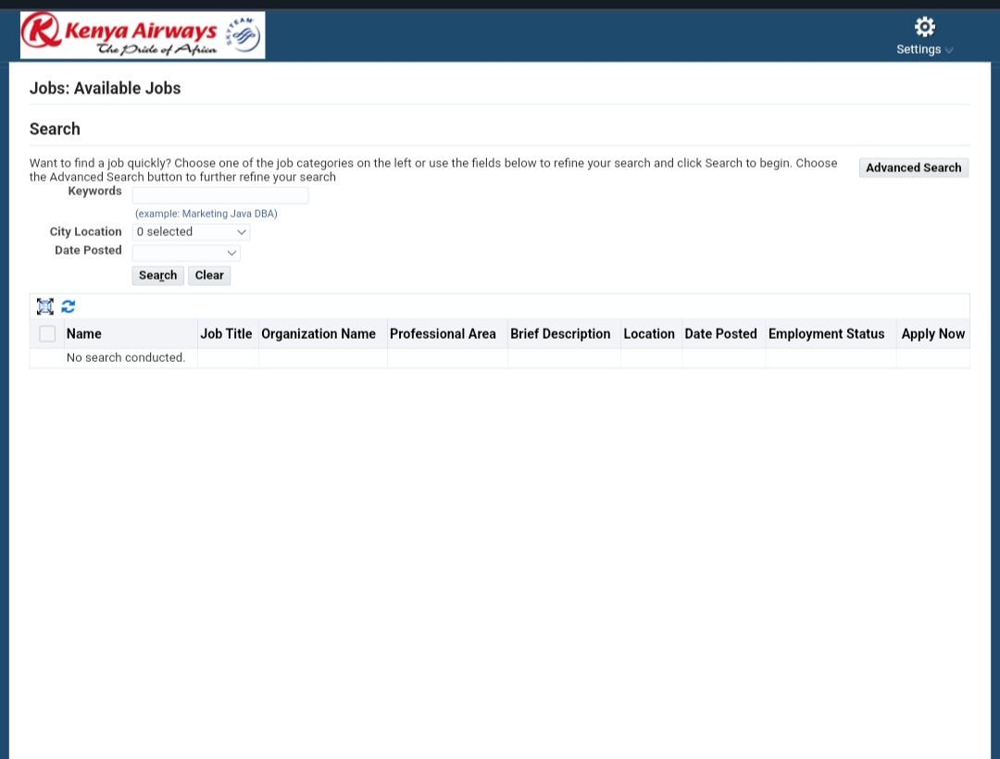

How to apply for careers at Kenya Airways(KQ)
Kenya Airways(KQ), the national carrier of , Kenya, offers numerous exciting job opportunities for individuals looking to build a career in the aviation industry. With its commitment to excellence and a strong presence in the African aviation market, Kenya Airways attracts talented professionals from various fields. If you're interested in joining this prestigious airline, this blog will guide you through the process of applying for a job at Kenya Airways.
Step 1: Visit the Kenya Airways Careers Page
Go to the Kenya Airways website at https://www.kenya-airways.com/about-us/careers/en/ and access their careers page.
Step 2: Find Job Openings
On the careers page, look for the section that says, "Looking for a job opening? Please click on the following link to proceed to the recruitment portal - Recruitment Portal." Click on the provided link to proceed to the recruitment portal.
Step 3: Visit the Recruitment Portal
After clicking the link, you will be redirected to Kenya Airways' job site. This is where all the available job openings are listed.
Step 4: Register for an Account
To apply for a job, you need to have an account on the recruitment portal. Look for the "Register today" option and click on it. This will allow you to create an account.
Step 5: Fill in Your Details
Once you've clicked on "Register today," you will be prompted to fill in your personal information. Make sure to provide accurate details and complete all the required fields. If you're using a mobile device, it is recommended to switch to desktop mode for a better experience.
Step 6: Search for Jobs
After registering and submitting your details, navigate to the jobs section on the recruitment portal. This is where you can explore the available job opportunities at Kenya Airways. Use the search functionality to find specific job listings that match your interests and qualifications.
By following these steps, you'll be on your way to applying for a job at Kenya Airways. Make sure to review the job requirements and submit your application before the specified deadline. Good luck with your application!